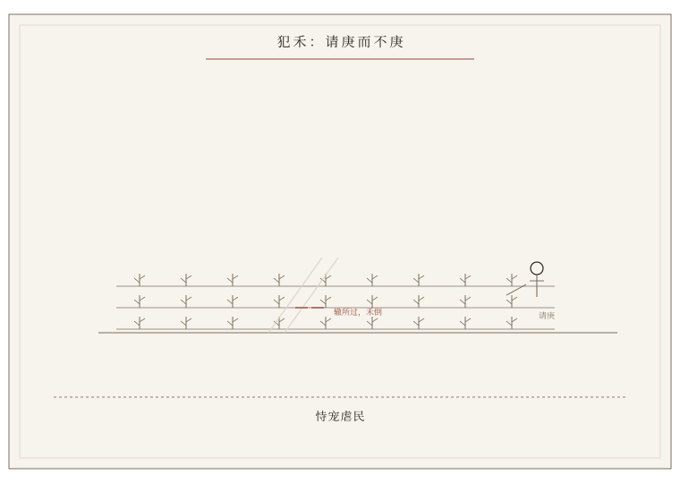

檀弓下 · 四·六十六 · 第 391 课
季子皋葬其妻，犯人之禾。申祥以告，曰：「请庚之。」子皋曰：「孟氏不以是罪予，朋友不以是弃予，以吾为邑长于斯也，买道而葬，后难继也。」
说什么事：季子皋葬他的妻子，踩坏了别人的禾。申祥把这事告诉他，说：「请赔偿。」子皋说：「孟氏不因这事责我，朋友不因这事弃我，因为我是此地的邑长啊。买路来葬，后世难以为继。」
落在哪一层：以「恃」为辞。两个「不以是」，说的是别人的宽，不是自己的该。
为何编在此位：上节论君以人言文过，此节论邑长以人宽自解。一在国，一在邑，皆以他人之宽当自己的理。
【经】季子皋葬其妻，犯人之禾。申祥以告，曰：「请庚之。」子皋曰：「孟氏不以是罪予，朋友不以是弃予，以吾为邑长于斯也。买道而葬，后难继也。」
【注】季子皋，孔子弟子高柴，孟氏之邑成宰，或氏季。犯，躐也。／申祥，子张子。庚，偿也。／时僭侈。／言非大故。／恃宠虐民，非也。长，丁丈反。
【疏】此一节论高柴非礼之事，各依文解之。／案《史记·仲尼弟子传》云：「高柴字子皋，少孔子三十岁，郑人也。」知为成宰者，下文云：「子皋为成宰。」云「季」者，高是其正氏，今言「季子皋」，故郑云：「或氏季。」以身处季少，故以字为氏而称季也，犹若子游称叔氏、仲由称季路，皆其例也。《弟子传》及《论语》作「子羔」，与此文「子皋」字不同者，古字通用。／子皋见申祥请偿，故拒之云：孟氏不以是犯禾之事罪责于我，以孟氏自为奢暴之故也。朋友不以是犯禾之事离于我，以其小失非大故也。斯，此也。以吾为邑，长于此成邑，乃买道而葬，清俭太过，在后世之人难可继续也。以孟氏不罪于己，故郑云「恃宠」，不肯偿禾，故云「虐民」。
季子皋 孔子弟子高柴，字子皋（子羔），成邑之宰。
犯人之禾 踩坏别人的禾稼。犯，躐。
申祥 子张之子。
庚 赔偿。
孟氏 鲁三家之一，成邑属孟氏。
罪予 责我。
弃予 弃绝我。
邑长 邑之长官。
买道而葬 出钱买路来葬。
后难继 后来的人难以照办。
季子皋葬他的妻子，踩坏了别人的禾。申祥把这事告诉他，说：「请赔偿。」子皋说：「孟氏不因这事责我，朋友不因这事弃我，因为我是此地的邑长。出钱买路来葬，后世难以为继。」
此章记一句推托。有人来说「该赔」，答的是「没人怪我」。
郑注四字断之：「恃宠虐民。」
第一层 「犯人之禾」 葬妻而踩人禾稼。
此一失极小。 小到本可一言了之，故后文之推托才显得重。
第二层 「请庚之」：申祥之正 申祥只一句「请庚之」——赔了它。
此语之正，在于只论事，不论人。 不问你是不是邑长，只问这禾是谁的。
第三层 子皋之答：两个「不以是」 「孟氏不以是罪予，朋友不以是弃予。」
此二句，答的不是「该不该赔」，而是「没人要我赔」。
此一偷换，是古今推托之通式：把「我该做什么」，换成「别人有没有要求我」。
第四层 「以吾为邑长于斯也」 此一句把「没人怪我」的理由说尽了：因为我是邑长。
注云「恃宠」——所恃者不是理，是位。
第五层 「买道而葬，后难继也」 此一句是子皋唯一的正面理由，也是最像道理的一句。
其意：我若今日买路，后世邑长便须照样买路，此事难以为继。
此一虑，本不为无理。 然其误在：他所虑者是「后来的人难继」，而非「眼前的禾是人家的」。
第六层 「后难继」之辨 礼有「不为后世立难继之法」之义，然此义所施者为「过厚」，不为「免偿」。
以「难继」为辞而不偿，是拿未来的方便，抵眼前的债。
第七层 郑注「恃宠虐民」 疏解之：「以孟氏不罪于己，故郑云『恃宠』；不肯偿禾，故云『虐民』。」
四字分两层：恃宠是心，虐民是事。 心与事俱在，故断之曰「非也」。
与今日何干 今之有权者，最常说的两句是「上面没说我」与「大家都这样」。
此章给一句：没人怪你，不等于你没欠人。
| 左 | 右 |
|---|---|
| 葬其妻 | 私事 |
| 犯人之禾 | 小失 |
| 请庚之 | 只论事 |
| 孟氏不以是罪予 | 无人责我 |
| 朋友不以是弃予 | 无人弃我 |
| 以吾为邑长 | 恃位 |
| 买道而葬 | 假设后患 |
| 后难继 | 以未来抵眼前 |
| 恃宠虐民 | 郑之断 |
画一片田垄，视点斜俯。田中横列三道平行的垄线，垄上生着成排的禾，禾以短竖加二三片叶示意。田间有一道车辙斜穿而过，辙为两条平行的浅沟，辙沟所过之处，有四五株禾倒伏折断，横贴于地。田边立一人形，一手抚着一株倒禾，另一手指向田外。不画文字。赭色只用在那几株折断的禾穗上。
